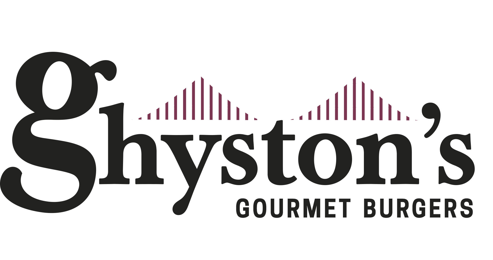
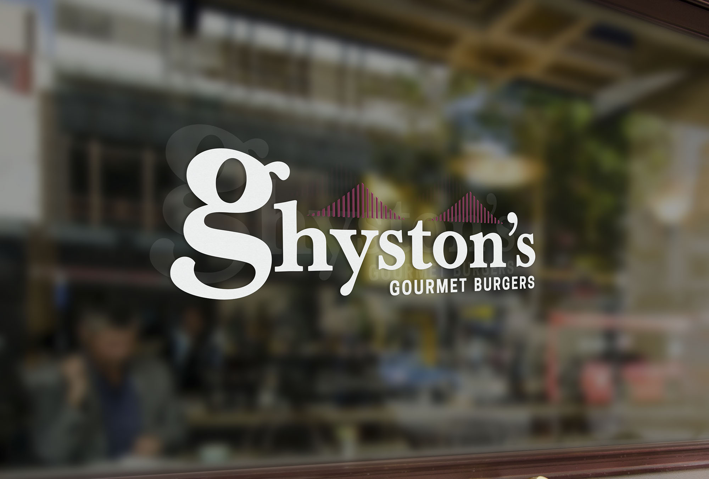
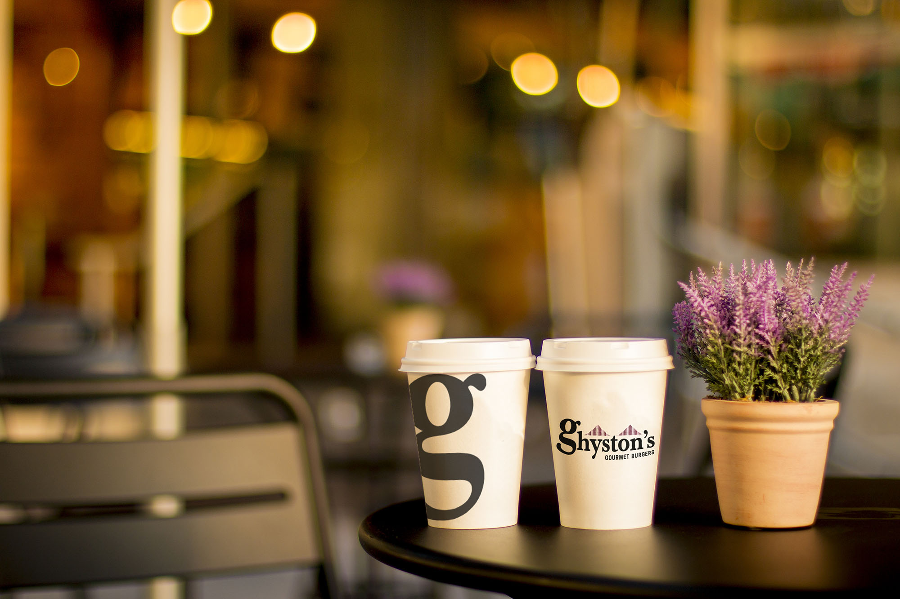
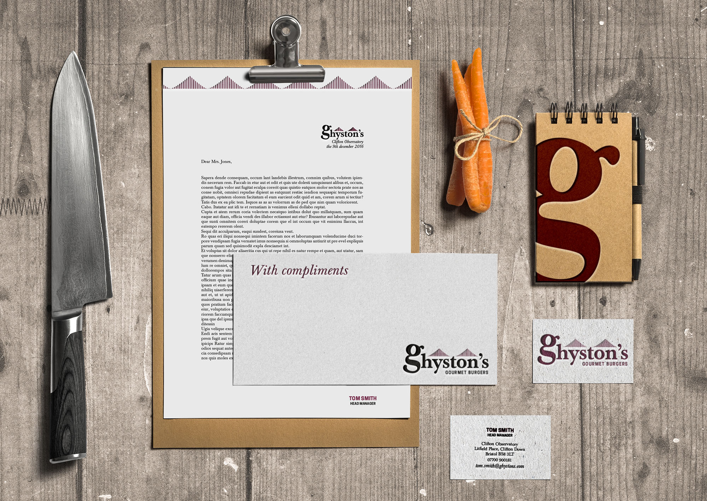
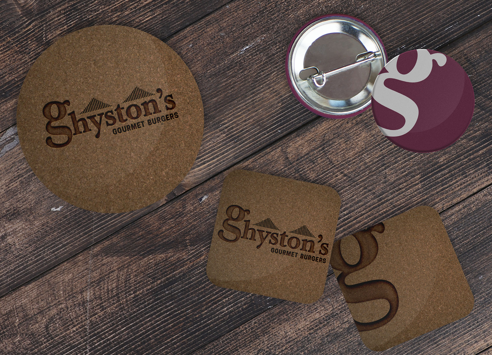

//
Création d’une identité visuelle pour un restaurant de Burgers Gourmets, situé à l’observatoire de Bristol. Ce projet fictif est l’occasion de réfléchir à ce qui définit le burger gourmet, concept très récent, qui a connu un essor certain en quelques années. L’identité utilise ainsi des codes assez luxueux, loin de la restauration rapide, tout en restant simple et s’ancrant dans le paysage par les courbes du ponts, rappelées tout au long de l’identité.
The brief asked to create an identity for a brand, imagined by an other student. Ghyston’s is a gourmet burger restaurant, based at the Clifton Observatory, near Bristol. The name comes from an old legend about two giants, living at Giant’s Cave, close to the observatory. This company has values like excellence, inspire, welcoming, respectful and belonging. I chose to use the shape of the Bristol Bridge, near the observatory, to remind the place and the landscape. On small items, the logo could also be used with the letter «g» alone. The coloured parts of the identity are in a metallic pantone, and most of the stationery is engraved, to give more luxury to the brand.




